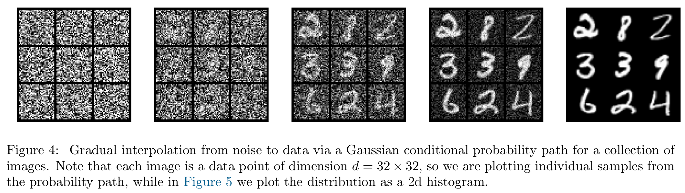
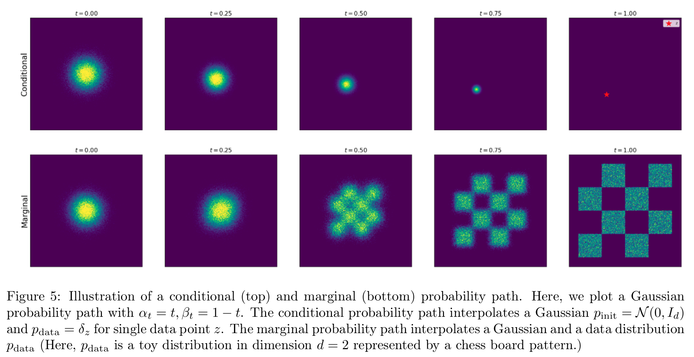
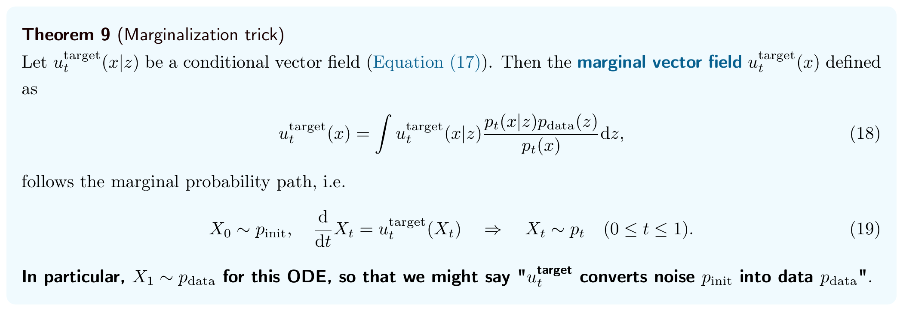
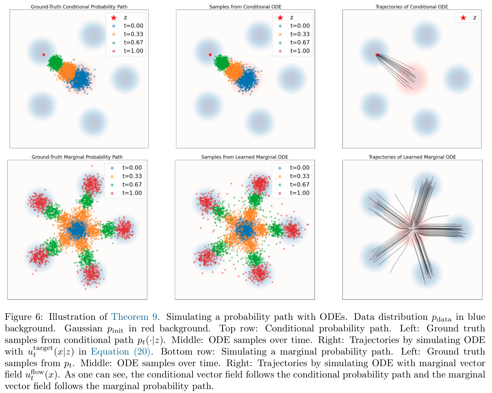
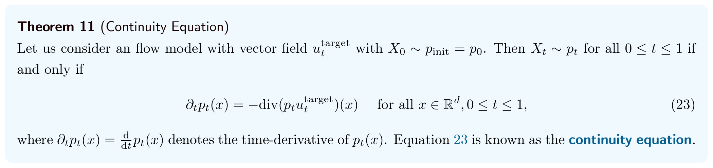
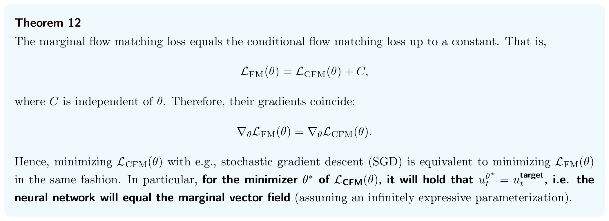
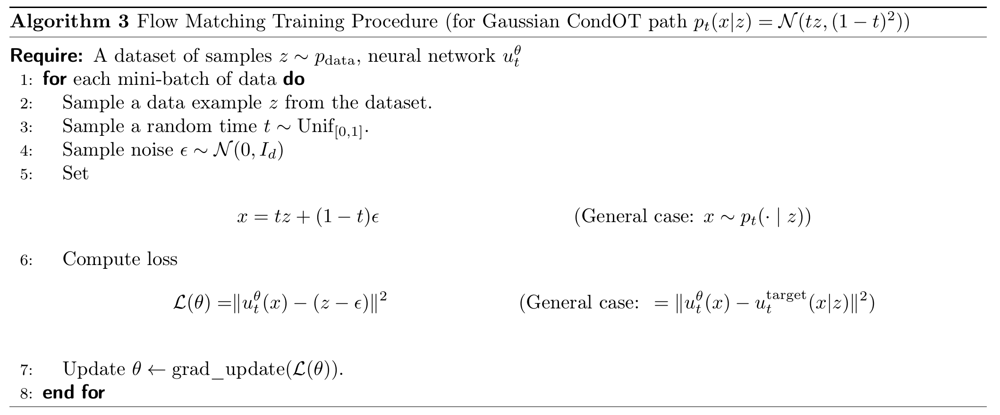
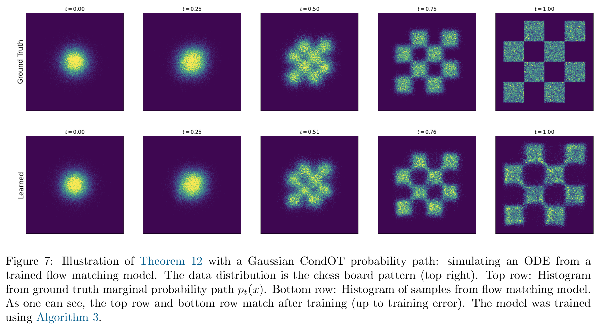
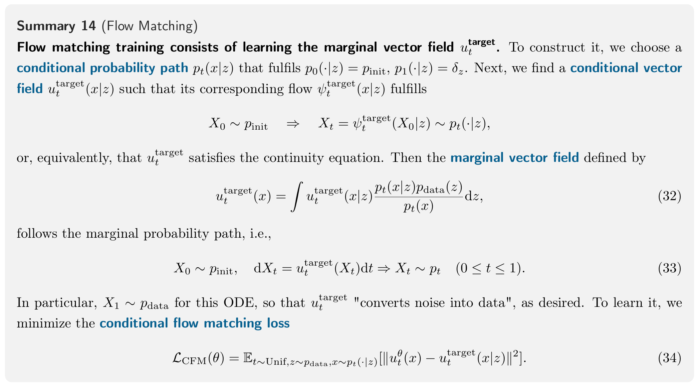
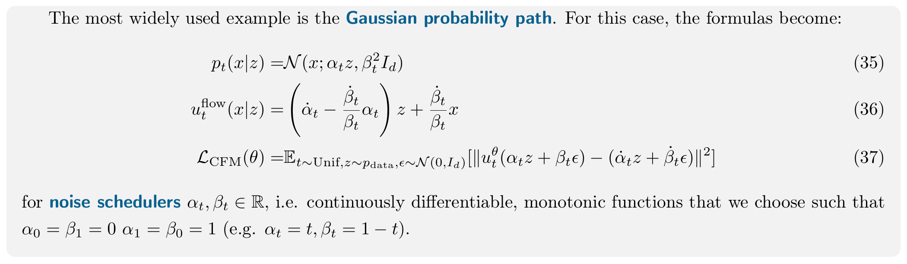

第 3 章 · 生成模型
Flow Matching
前面已经知道怎样沿 ODE 生成样本：从简单分布抽取起点，再按照速度场连续移动。现在剩下的问题是：网络应当学会怎样的速度，才能让终点的分布接近真实数据？
这里研究的是 Flow Model 的训练。采样时仍然求解 ODE：
X0∼pinit,dXt=utθ(Xt)dt.(10)
utθ(x) 是待训练的速度网络；目标是让时间 1 的终点满足 X1∼pdata。训练中会抽取噪声来构造样本，但这不等于采样时沿途再加入布朗噪声。
Flow Matching 的主线：先规定样本分布怎样从噪声过渡到数据，再构造对应的目标速度，最后把学习速度变成一个可计算的回归问题。
正文保留关键定理、英文总结与核心推导；补充计算按需展开。
先把三个容易混在一起的对象分开。后面的三节，就是逐步把它们连接起来：
| 对象 | 回答的问题 |
|---|---|
| 概率路径 pt | 每个时刻，整群样本应该怎样分布？ |
| 目标速度 uttarget(x) | 为了实现这些分布，样本经过 x 时应该怎样移动？ |
| 网络 utθ(x) | 能否学会这套根据位置与时间给出速度的规则？ |

从左向右，噪声逐渐减少，目标图像逐渐显现。每个小方格是一张图像，也就是高维空间中的一个样本；下面要讨论的概率路径，则描述同一时刻许多样本组成的分布。
3.1 Conditional and Marginal Probability Path：条件与边缘概率路径
The first step of flow matching is to specify a probability path.
只规定起点服从 pinit、终点服从 pdata，还没有规定中间的分布。概率路径 (pt)0≤t≤1就是为每个时刻选择一个分布：希望沿途样本满足 Xt∼pt。它规定的是各时刻的分布，还没有指定每个样本具体怎样移动。
条件路径：先固定一个终点 z
先把问题缩小：固定一个数据点 z，让噪声分布逐渐收缩到它。用 pt(x∣z) 表示固定 z 后，时刻 t 的状态分布；它必须满足：
p0(⋅∣z)=pinit,p1(⋅∣z)=δz.(11)
δz 表示所有概率都集中在 z 的分布：从中采样，每次都得到 z。符号“⋅”只是给状态变量留的位置。这里的“条件”指固定数据点 z。
因此，条件路径回答的是：“如果终点指定为这个数据点，中间的样本分布可以怎样变化？”
边缘路径：把所有可能的终点混合起来
生成模型要得到整个数据分布，因此接下来让 z 也随机。采样顺序是：
z∼pdata,x∼pt(⋅∣z)⟹x∼pt.(12)
也就是先抽一个数据点，再从通向它的条件路径中抽取当前位置。把 z 混合掉，得到边缘概率路径：
pt(x)=∫pt(x∣z)pdata(z)dz.(13)
这个积分就是加权混合：每个数据点贡献一份条件分布，权重由数据分布决定。“边缘化”指不再区分一个位置对应哪个 z，只看所有位置总体形成什么分布。实际使用有限数据集时，可以把抽取 z 理解为抽取一条训练数据。
两端也随之确定。起点时，所有条件分布都是同一个 pinit，所以混合后仍是它；终点时，先抽到哪个 z，就输出哪个 z，因此：
p0=pinit,p1=pdata.(14)
我们可以方便地采样，却未必能方便地算出密度。两步抽样不需要知道积分的数值；但给定一个 x，要计算 pt(x)，通常需要对大量可能的 z 求和或积分。后面训练目标的困难也来自这里。

上排固定一个 z，最终集中到这个点；下排把不同 z 的条件分布混合，最终得到棋盘形的数据分布。与 Figure 4 中的单张图像不同，这里每幅图画的是二维空间中的分布。
Example 8：高斯条件概率路径怎样构造？
用数据与噪声的线性插值构造路径。抽取数据 z 和与它独立的标准高斯噪声 ϵ，令：
xt=(1−t)ϵ+tz.
时间从 0 增加到 1 时，噪声的权重逐渐减小，数据的权重逐渐增大。为了把“一个样本”与“一群样本的分布”分开，先固定一对具体数值：
z=3,ϵ=−1,xt=(1−t)(−1)+3t=−1+4t.
这条轨迹从 −1 走到 3，在 t=0.5 时位置为 1。固定这一对数据与噪声，得到一条轨迹；固定终点、让噪声变化，才得到一群样本的条件分布。
展开：单条轨迹与条件分布的数值对照
| 时间 t | 位置 xt |
|---|---|
| 0 | −1 |
| 0.25 | 0 |
| 0.5 | 1 |
| 0.75 | 2 |
| 1 | 3 |
这是一条从 −1 走到 3 的单个样本的轨迹。如果只固定终点 z=3，让初始噪声 ϵ∼N(0,1) 变化，就得到一群轨迹。它们在时刻 t 的位置分布为：
pt(⋅∣z=3)=N(3t,(1−t)2).
例如在 t=0.5 时，这群样本的均值是 1.5，而刚才那条轨迹的位置是 1。均值描述整群样本的中心，不要求每个样本都位于这个中心。
中心从 0 移向 3，标准差从 1 缩小到 0，最后集中在 3。这就是 Figure 5 上排的条件路径。固定终点，并不等于中间状态已经确定：初始噪声不同，中间位置仍然不同。再让终点也随数据变化，把这些条件分布混合起来，就得到下排的边缘路径。
这个构造可以推广为两个随时间变化的系数 αt,βt，分别控制数据的权重和噪声的尺度。它们连续可微、单调，并满足：
α0=0,α1=1;β0=1,β1=0.
定义高斯条件路径：
pt(⋅∣z)=N(αtz,βt2Id).(15)
对应的采样方式是：
z∼pdata,ϵ∼N(0,Id),xt=αtz+βtϵ.(16)
这里三个符号各有角色：
| 符号 | 含义 |
|---|---|
| z | 抽到的数据点，用作条件路径的终点 |
| ϵ | 独立抽到的初始噪声 |
| xt | 数据与噪声组合后，在时刻 t 的状态 |
固定 z 后，这只是对高斯噪声做缩放和平移，所以得到式 (15) 的高斯分布。两端分别是 x0=ϵ 与 x1=z，因此从噪声过渡到了数据。
展开：核对高斯路径的均值、协方差与端点
固定 z 后，只有 ϵ 随机，因而：
E[xt∣z]Cov(xt∣z)=αtz,=βt2Id.
高斯变量经过缩放和平移仍是高斯变量，所以其均值、协方差正好给出式 (15)。这里 βt 是噪声的标准差尺度，协方差中因此出现平方。再看端点：x0=ϵ 是纯噪声，x1=z 是数据点。零方差的终点表示集中在 z，即 δz。
条件分布是高斯分布，不代表边缘分布也是高斯分布。不同中心的高斯分布混合后，可以形成复杂形状。取 αt=t, βt=1−t，就回到上面的线性例子。
3.2 Conditional and Marginal Vector Fields：条件与边缘速度场
概率路径给出“希望每个时刻是什么分布”，速度场给出“每个位置的样本此刻该怎样移动”。训练时知道 z，可以直接用插值公式合成中间状态；但生成新样本时，还不知道终点是什么，不能先把未知的 z 填进去。因此，需要一套只根据当前位置和时间给出速度的规则，再用 ODE 逐步移动。
先找能实现条件路径的速度场
对固定的终点 z，寻找条件速度场 uttarget(x∣z)，使它的 ODE 产生刚才指定的条件分布：
X0∼pinit,dtdXt=uttarget(Xt∣z)⟹Xt∼pt(⋅∣z).(17)
上标 target 表示我们构造的目标速度；它与待学习的网络 utθ 要区分。条件速度可以依赖已知的 z，这使它往往能够直接算出来。
Theorem 9：从条件速度组合出边缘速度

固定 z 时，条件速度把样本送向一个终点。要得到整个数据分布，就在同一时刻、同一位置，按后验权重平均不同终点对应的条件速度：
uttarget(x)=∫uttarget(x∣z)pt(x)pt(x∣z)pdata(z)dz.(18)
这套目标速度的 ODE 能实现指定的 pt，终点便是 p1=pdata。接下来先算具体的条件速度，再解释权重和成立的原因；到 3.3 才训练网络。
Example 10：从高斯插值推导目标速度
速度来自轨迹对时间的导数。沿用 z=3,ϵ=−1，轨迹为 xt=−1+4t，因此：
dtdxt=4,x0.5=1.
在 t=0.5 时，位置是 1，速度是 4。当前位置是网络的输入，移动速度才是要预测的量。
推广到一般高斯路径，同样固定同一对 z,ϵ，只让时间变化：
Xt=ψttarget(ϵ∣z)=αtz+βtϵ.(21)
这里 ϵ 是这条轨迹的初始位置；求导时它与 z 都保持不变。记 α˙t,β˙t 为两个系数对时间的导数，则：
dtdXt=α˙tz+β˙tϵ.
速度场需要以当前位置 x为输入，因此还要把初始噪声换成 x 的表达式：
由 x=αtz+βtϵ，在 βt>0 时得到：
ϵ=βtx−αtz.
代回速度公式并整理：
uttarget(x∣z)=α˙tz+β˙tβtx−αtz=(α˙t−αtβtβ˙t)z+βtβ˙tx.(20)
整个推导就是：对插值求导，再用当前位置消去初始噪声。这样得到的速度场，恰好沿着我们构造的条件轨迹运动，因此实现了对应的高斯条件路径。
展开：在线性例子中，速度为什么等于“剩余位移 ÷ 剩余时间”？
取 αt=t, βt=1−t，则 α˙t=1, β˙t=−1。在 t<1 时，代入上面的速度公式：
uttarget(x∣z)=z−1−tx−tz=1−t(1−t)z−x+tz=1−tz−x.
它就是“剩余位移 ÷ 剩余时间”。例如 t=0.5,x=1,z=3 时，速度为 (3−1)/(1−0.5)=4，与直接求导一致。
在 t=1 时，βt=0，不再满足上面的使用条件。此时收缩到 z 的终点按极限理解，不把 1 直接代入分母。

上排比较固定 z 的条件路径与其解析速度场的 ODE。下排左图是目标边缘路径，中、右图使用学习得到的边缘速度场，展示样本分布和轨迹；具体学习方法将在 3.3 展开。这里关注的是各时刻的分布是否接近，而非单个样本是否一一相同。
到这里，已经解决的是：如果终点 z 已知，怎样给出通向它的速度。但生成新样本时并不知道终点。接下来要回到 Theorem 9：怎样把这些依赖 z 的条件速度，合成为只看当前位置和时间的边缘速度？
为什么按这个权重平均：Bayes 后验
同一位置可能来自不同的条件路径，而这些路径给出的速度未必相同。生成时不知道终点 z，因此需要把各个条件速度合成一个只依赖 x,t 的速度。Theorem 9 使用的权重是：当前位置附近，各种数据来源分别占多少。
一种来源的贡献，同时取决于它在数据中出现得多不多，以及它的条件分布在当前位置密不密。把这份贡献除以当前位置的总密度，就得到 Bayes 后验密度：
qt(z∣x)=pt(x)pt(x∣z)pdata(z).
pdata 描述观察到当前状态前的数据分布，称为先验；qt(⋅∣x) 描述给定当前状态后的来源分布，称为后验。分母负责归一化。于是边缘速度就是：
uttarget(x)=EZ∼qt(⋅∣x)[uttarget(x∣Z)].
在当前状态下更可能出现的来源，其条件速度权重就更大。这些权重通常不相等，会随位置和时间改变。来源分组用于构造平均，并不表示每条生成轨迹都预先绑定某个终点。
后验解释了怎样平均。还需要检查：按照这个平均速度移动时，各区域内概率的增减，是否恰好符合指定的 pt？这正是连续性方程要回答的问题。
Theorem 11：连续性方程连接速度与分布

这个定理用连续性方程，把“点怎样移动”与“分布怎样变化”连接起来。前面给出了候选速度，现在要检查：让样本按照这个速度移动，整群样本的分布，真的会按照指定的 pt 变化吗？它在这里用于证明目标速度能够实现指定的分布路径；后面的训练损失，才负责让网络学会这个速度。
想象数轴上有很多移动的点。固定一个区间，里面的点变多，是因为进入的比离开的多。概率也一样：如果每单位时间从左边进入 0.03 的概率，从右边离开 0.05，区间内概率的变化率就是 0.03−0.05=−0.02。区域内的概率变化，来自边界上的流入和流出。
先把“流量”写出来。在短时间 Δt 内，以正速度 ut(x) 向右运动的样本大约移动 ut(x)Δt；边界左侧这段距离内的概率约为 pt(x)ut(x)Δt。除以时间，就得到单位时间通过这里的概率，称为概率通量：
Jt(x)=pt(x)ut(x).
这与“人群密度 × 行走速度 = 人流量”相同。取向右为正，向左为负；密度决定这里有多少样本，速度决定它们通过得多快。
从区间的收支，得到一个位置的密度变化。取小区间 [x,x+Δx]，其中 Δx>0，区间不随时间移动。其中的概率约为 pt(x)Δx，所以：
区间内概率的变化率∂tpt(x)Δx≈左边界通量减右边界通量Jt(x)−Jt(x+Δx).
两侧都向右运动时，右边就是“左边流入减右边流出”；向左运动时，带符号的通量仍使用同一个公式。先将两边除以区间长度 Δx：
∂tpt(x)≈ΔxJt(x)−Jt(x+Δx).
导数通常写成“后面的值减前面的值”。把分子的顺序调换，需要在外面加一个负号：
∂tpt(x)≈−ΔxJt(x+Δx)−Jt(x).
右边的分式是“通量的变化量 ÷ 位置的变化量”。固定时间 t，让 Δx→0，它就变成通量对位置的偏导数：
∂xJt(x)=Δx→0limΔxJt(x+Δx)−Jt(x).
在密度和通量足够光滑时，缩小区间得到精确关系 ∂tpt(x)=−∂xJt(x)。最后代入 Jt(x)=pt(x)ut(x)，得到一维连续性方程：
∂tpt(x)=−∂x(pt(x)ut(x)).
∂t 表示固定位置，看密度随时间怎样变化；∂x 表示固定时间，看通量随位置怎样变化。如果右边的通量比左边大，流出去的更多，密度就下降——这也解释了负号。
在多维空间，还要把上下、前后等各方向的净流出合起来。这个运算称为散度，记作 div，于是：
∂tpt(x)=−divx(pt(x)ut(x)).(23)
连续性方程描述的是速度引起的概率收支。给定相同的初始分布，在相应光滑性与唯一性条件下，如果目标分布和候选速度满足它，就能确认这个 ODE 实现了指定的分布路径。
回到 Theorem 9：平均速度为什么能实现目标分布？先用一个简化例子看通量。假设在某个时刻、某个位置附近，两种来源分别占 30% 和 70%，速度分别为 4 和 2。这里假定的是当前位置的后验比例。按它们平均，速度就是 0.3×4+0.7×2=2.6。
记此处总密度为 p。各组贡献的通量相加，恰好等于使用平均速度后的通量：
(0.3p)×4+(0.7p)×2=p×2.6.
定理九把这种关系用于每个位置、每个时刻：按局部来源比例平均速度，得到的总通量，等于各组通量之和。各组的概率收支符合连续性方程，混合后的分布也就符合。结合相同的初始分布与适用的唯一性条件，平均速度实现了目标概率路径；各条生成轨迹不必保留原来的来源标签。
展开：将条件通量混合代入连续性方程，证明 Theorem 9
先把式 (18) 两边乘以总密度 pt(x)。后验权重的分母被消去，平均速度转成了总通量：
pt(x)uttarget(x)=∫pt(x∣z)uttarget(x∣z)pdata(z)dz.
右边计算每种来源的“条件密度 × 条件速度”，再按来源在数据中的比例汇总。这就是正文中通量相加关系的连续形式。
每条条件路径都满足自己的连续性方程。把它们加权积分，并把微分移到积分外：
∂tpt(x)=∫∂tpt(x∣z)pdata(z)dz=−divx(∫pt(x∣z)uttarget(x∣z)pdata(z)dz)=−divx(pt(x)uttarget(x)).
最后一行就是边缘路径的连续性方程。结合相同的初始分布与适用的唯一性条件，便得到 Theorem 9：
X0∼pinit,dtdXt=uttarget(Xt)⟹Xt∼pt.(19)
这里默认所需微分与积分可以交换；密度比值在 pt(x)>0 处使用，集中到点的终点按分布极限理解。
连续性方程怎样连接到训练目标？它为“为什么要学这个速度”提供依据。接下来的逻辑是：
- 确认目标速度有效：用连续性方程证明，构造出的 uttarget 能实现选定的 pt，终点为数据分布。
- 让网络逼近这个速度：把 uttarget 作为回归目标，用预测与目标的均方误差构造 FM 损失。
- 把损失变成能计算的形式：边缘目标速度难算，定理 12 允许改用容易计算的条件速度标签，得到 CFM，期望梯度相同。
这里的训练损失衡量速度预测误差，不直接计算连续性方程的误差。因此，训练时不用计算密度的时间导数或散度。均方误差是学习目标速度的方法；它的形式并不是由连续性方程唯一决定的。
3.3 Learning the Marginal Vector Field：学习边缘速度场
现在将上述思路写成训练目标：用带参数 θ 的网络，逼近已经构造好的边缘目标速度。
参数化与回归：怎样让一个函数学会预测速度？
参数化，就是用一组可调的数字表示一个函数。例如在一维中，可以先想象一个简单的速度预测函数：
utθ(x)=ax+bt+c,θ=(a,b,c).
它接收位置 x 和时间 t，输出速度；改变 a,b,c，输出规则就会改变。实际模型使用表达能力更强的神经网络，θ 表示网络的权重和偏置。这个线性函数只用来说明参数的含义。
回归，就是给函数输入与数值标签，通过预测误差调整参数。这里预测的是速度，使用平方误差训练。uttarget 是希望学到的目标规则，utθ 是网络当前的预测；训练调整的是 θ，选定的目标规则保持不变。训练后的同一个网络也用于生成样本。
想学的是边缘速度，能算的是条件标签
如果能够直接计算边缘目标速度 uttarget(x)，就可以把它当成标签，让网络预测与它接近。这对应 Flow Matching 损失：
LFM(θ)=Et,x[utθ(x)−uttarget(x)2].(24)
这里抽取 t∼Unif[0,1]、x∼pt。括号里是“预测速度减目标速度”的平方误差，E 表示对抽到的时间和位置取平均。但目标速度本身涉及难算的后验平均，直接用它作标签通常不方便。
但训练时，我们知道抽到了哪个数据点 z。给定它，条件速度 uttarget(x∣z) 往往能直接计算，例如前面的线性路径给出标签 z−ϵ。于是，每次只拿这一个容易算的条件速度作标签，得到 Conditional Flow Matching（CFM）：
LCFM(θ)=E[utθ(x)−uttarget(x∣z)2].(26)
这里依次抽取 t∼Unif[0,1]、z∼pdata、x∼pt(⋅∣z)。Unif 表示均匀分布，E 表示取平均，∥⋅∥2 把速度各分量的误差平方后相加。
网络只输入 (x,t)。数据点 z 用来构造输入和标签，不直接交给网络。因此，它要学习的是“看到这个状态时，应该怎样移动”，而不是“已知终点后怎样回到那个点”。
Theorem 12：为什么用条件标签，也能学到边缘速度？

关键是：两种损失只差一个与参数无关的常数，因此对参数求导后相同。这里比较的是期望损失；实际小批量仍有采样波动。
为什么会这样？同一个 (x,t) 可以来自不同的 z，所以条件速度标签也可能不同。网络只看到 (x,t)，只能给出一个预测。平方误差回归的理想预测，正是给定这个输入后，所有可能标签的平均值。
这个“平均”就是前面得到的后验平均：当前状态更可能来自哪一组，那一组的标签贡献得更多。因此，网络虽然每次只看到一个条件标签，总体上学习的却是边缘速度。训练按规定抽取数据、时间和噪声即可，无需先计算后验权重。
Example 13：把输入和速度标签直接写出来
对高斯路径，输入状态可以直接构造：
xt=αtz+βtϵ,ϵ∼N(0,Id).(28)
固定同一对 z,ϵ 对时间求导，便得到这条条件轨迹的速度，也就是训练标签 vt=α˙tz+β˙tϵ。输入和标签都由已抽到的 t,z,ϵ 直接计算，不用先求解 ODE。
在线性选择 αt=t, βt=1−t 下，α˙t=1, β˙t=−1，整套训练目标变得很简单：
输入状态：速度标签：训练损失：xt=tz+(1−t)ϵ,v=z−ϵ,Et,z,ϵutθ(xt)−(z−ϵ)2.
网络实际输入仍是 (xt,t)。固定 z,ϵ 时，条件轨迹从噪声沿直线走到数据，时间长度是 1，因此速度为 z−ϵ。这个高斯条件路径常称为 CondOT path；学到后验平均速度后，生成的边缘 ODE 轨迹一般不必是直线。
展开代入步骤：条件速度里的分母如何消去？
在 βt>0 的时刻，将 xt=αtz+βtϵ 代入 Example 10 的条件速度：
uttarget(xt∣z)=α˙tz+βtβ˙t(xt−αtz)=α˙tz+βtβ˙tβtϵ=α˙tz+β˙tϵ.
因此，一般高斯路径下的 CFM 损失为：
LCFM(θ)=Et,z,ϵ[utθ(αtz+βtϵ)−(α˙tz+β˙tϵ)2].(31)
这里 t∼Unif[0,1]、z∼pdata、ϵ∼N(0,Id) 独立抽取。实际构造标签时，直接用 α˙tz+β˙tϵ，无需计算 1/βt。含分母的速度场表达式仍只在 βt>0 时使用，收缩到点的终点按极限理解。
Algorithm 3：一次训练更新到底做什么？

每个小批量重复同一流程：独立抽取数据、时间和噪声 → 构造输入与速度标签 → 计算平均平方误差 → 反向传播更新参数。网络只接收 (xt,t)，数据 z 用于构造训练样本。
沿用 z=3,ϵ=−1,t=0.5 的例子：网络输入是 (1,0.5)，速度标签是 4。若网络预测速度为 2，这条样本的损失就是 (2−4)2=4。这是一次监督信号；不同来源提供不同标签，总体训练使网络逼近它们的后验平均。
训练完成后，再从新噪声生成样本
训练时，抽到哪个时间，就直接构造那个时刻的输入和标签，不必从时间 0 一步步走过去。这就是 simulation-free。生成时则不同：没有已知的数据终点 z，需要从新噪声出发，沿学到的速度逐步移动：
X0∼pinit,dXt=utθ(Xt)dt.(27)
例如 Euler 方法每步近似为 Xt+h≈Xt+hutθ(Xt)。网络参数保持固定，求解器不断查询当前位置的速度、更新状态，最后返回终点样本。
| 阶段 | 已知什么 | 更新什么 |
|---|---|---|
| 训练 | 数据、噪声、随机时间，以及构造出的速度标签 | 网络参数 θ |
| 生成 | 初始噪声，以及之后的当前位置和时间 | 样本状态 Xt |

上排是预先指定的边缘概率路径，下排是训练后沿 ODE 运动得到的样本分布。对应阶段的分布接近，展示了速度回归如何转化成分布演化；比较的是整体分布，而非单个样本一一相同。
Summary


References
[1] Peter Holderrieth and Ezra Erives. An Introduction to Flow Matching and Diffusion Models. MIT 6.S184: Generative AI With Stochastic Differential Equations, 2026.
相关内容：第 3 章 Flow Matching，3.1–3.3 节，第 14–24 页。Theorem 9、11、12，Summary 14，以及 Figure 4–7 与 Algorithm 3 均为原文截图；Summary 14 保留完整续页。